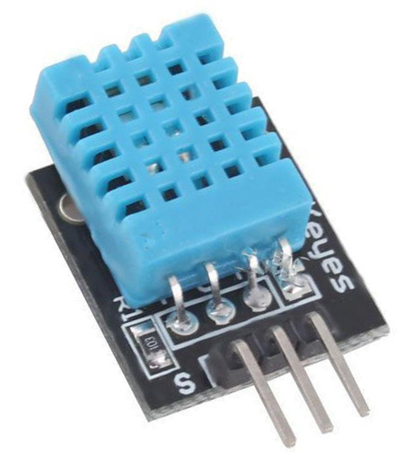

Introduction
Input devices are often called sensors. It it something used to detect events or changes in the environment and send these information to other electronics, usually a computer processor. In this module, since we are controlling using a Arduino Uno, the sensors can be connected to the Uno to send information into it.
There are 3 methods in reading and obtaining information from a sensor.
- Always Available: The data is always available to be read by the processor. One example would be a temperature sensor that is always recording the surrounding temperature. This data, which is the temperature, can always be obtained by the processor.
- Polling: The processor have to continuously check with the sensor for information for a change in the reading or any new information which would be indicated by the sensor to the processor, such as a switch.
- Triggering: A trigger is a signal send by the processor to the sensor, where it will take the information and send it back to the processor after receiving the signal. E.g. Ultrasonic sensor
Sensor data is usually analog(continuous), such as the temperature, humidity or distance. Since different quantities have different units and scaling, the sensor usually converts the data into an equivalent electrical signal or a certain voltage to be sent to the processor to convert it back to an understandable data.
Libraries
To use a certain input or output device, a library is usually required to have the code requried to write and run functions. Some libraries come with the arduino system, but there is a lot of libraries that can be downloaded to run almost every device. To add libraries that comes with the system, use the Library Manager. IDE > Sketch > Install Library > Manage Libraries. Search for the library that you need, highlight it and click Install.
To add a external library, you have to download the .ZIP folder into your computer, usually from the internet. After doing so, add it into the arduino system with IDE > Sketch > Include Library > Add .Zip Library. Restart Arduino. To check if the library has been added and apply it to your application, use IDE > Sketch > Include Library > LibName
Type of sensors
- Switches: Switches are a electical component capable of connecting and disconnecting a conducting path of current. It can provide a digital signal of either LOW or HIGH. Many types of switches are available.
- Toggle Switch: A mechanical switch that keeps its state until it is pressed, where it will then change between LOW and HIGH.
- Pushbutton switch: A spring-loaded mechanical switch that changes state when the switch is pressed and held down. When released, the switch will return to its normal/previous state. There are 2 types of pushbutton switches, Normally closed, until it is pressed, and Normally open, until it is pressed.

- Slide switch: A switch that remains at its current state until it slided, where it will remain in its new state. Usually, a slide switch has 3 pins. When the switch is on the left, the middle and left pins are connected. When the switch is on the right, the middle and right pins are connected.
- Touch Capacitative switch: A switch that works based on body capacitance. When a person touches it, the body increases the capacitance of the switch and triggers the switch.
- Toggle Switch: A mechanical switch that keeps its state until it is pressed, where it will then change between LOW and HIGH.
- Temperature/Humidity: A sensor that can measure the environment, such as a DHT-11 sensor that measures the temperature and humidity. The DHT-11 sensor has 4 pins, the 1st pin is the Vcc, which powers the sensor and the 4th pin which is the ground. The 2nd pin is the data pin, which send data to the Arduino UNO. The sensor requires the use of the DHT-11 library to program.

- Distance: There are many methods of measuring distance, such as using Infrared or Ultrasonic.
- IR Obstacle Avoidance Sensor: Remains at a fixed state until an object is at a certain distance to it, where the state changes and remain at its new state until the object is out of the distance. It can either use Enable pulse or continuouse measurement. The distance can also be set with the potentiometer in the sensor between 2cm to 40cm. It does not measure distance, only detects if anything is in the distance. Furthermore, it can only detect surfaces that are reflective (such as a white wall).
- Ultrasonic HC-SR04: Has a range between 2cm to 4m, and uses sonar to detect distance before returning a pulse proportional to the distance measureed. It is accurate to 3mm and measures at an angle of 15 degrees.
`
- Motion Detection: Detects motion, usually the presence of humans or animals nearby.
HC-SR501 Passive Infrared Sensor: Has a range of 7 meters and covers 120 degrees in front of it.
Microwave module Doplar detection RCWL-0516: A Stand-alone module using “Doplar Radar” to detect motion. It can be connected to a computer processor and cover a distance of 7 meters